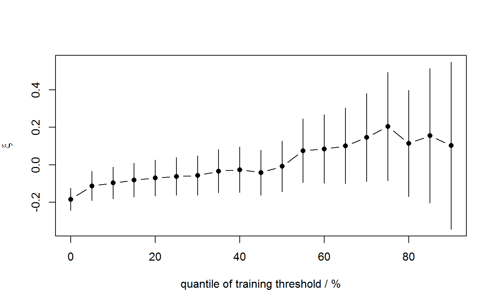

plot method for objects of class "stability" returned from
stability
# S3 method for stability plot( x, y, ..., prob = TRUE, top_scale = c("none", "excesses", "opposite"), vertical = TRUE )
| x | an object of class "stability", a result of a call to
|
|---|---|
| y | Not used. |
| ... | Additional arguments passed on to
|
| prob | A logical scalar. If |
| top_scale | A character scalar.
If |
| vertical | A logical scalar. Should the confidence intervals be
depicted using a vertical line for each threshold ( |
In addition to producing the plot a list of the arguments used
by matplot, axis is
returned (invisibly).
Produces a simple threshold diagnostic plot based on the object
returned from stability.
The MLEs of the GP shape parameter $\(\xi\)$ and
approximate conf% confidence intervals
for \(\xi\) are plotted against the threshold used to fit the GP model.
This plot is used to choose a threshold above which the underlying GP
shape parameter may be approximately constant. See Chapter 4 of
Coles (2001). See also the vignette "Introducing threshr".
as described in .
See also the vignette "Introducing threshr".
u_vec_gom <- quantile(gom, probs = seq(0, 0.9, by = 0.05)) gom_stab <- stability(data = gom, u_vec = u_vec_gom) plot(gom_stab)